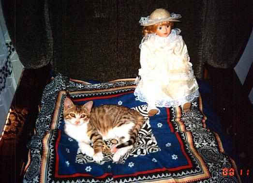
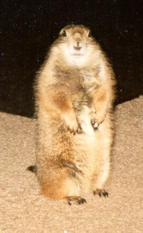
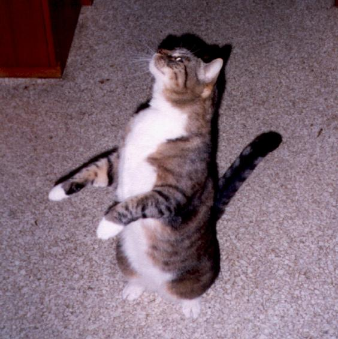

The Official FelineVWM Homepage - Cats:-)
FVWM would not have been possible without the tails, ears and the little paws
of the coziest beings in the world: our cats. Well, perhaps we could have
done without the paws. If your pet ever walked straight over your keyboard,
chased your mouse pointer (yes, I know cats are supposed to catch mice, but
still...) or fell asleep on your trackball you know what I mean. ^_^
Dominik's cats:
Kassandra
female, * 1989, + on 23rd of June in 2000 (bitten to death by a dog)

Kassandra was my favourite before I got Niniel, Luthien and Tilion. I had
to leave her behind when I moved to Southern Germany. I loved her very much
and I did not want to force her to move with me. We got them at the age of
1 and a half years and it took three month before she came down from the
heating pipes in our cellar.
Luthien
female, * 13th of September 1998, + run over by a car on 18th of March 1999)

Was the most beautiful kitten I've ever seen. She was my favourite cat the
instant I saw her (she was hiding in the attic and hissed when I came too
close). Had the strongest character and the largest eyes of the three. I
miss her so much!
Niniel
(full name: Niniel Nienor), female, * 13th of September 1998

The smallest and cutest of my three cats. A saucy little whirlwind that loves
piddling on my bed and sofa. I have to find a better photograph.
Tilion
(male, * 13th of September 1998, ran away October 2002)

The biggest of my three cats. Hobbies: feeding and squawking. Once we tested
when Tilion would stop feeding, but had to break off the experiment when
we ran out of cat food.
Geoffrey and Pepper
male, * 1988, Pepper missing for years now (picture of Geoffrey below), Geoffrey
was put to sleep on 26th of November 2001

Two big black tomcats with a few white patches on the belly. Most of the
time when not feeding or sleeping they stray around the neighbourhood. Geoffrey
was the terror of the cats in the area. I had to leave him behind when I
moved to Althengstett.
Blacky and Tiger
female and male, * 1980, Tiger was given away when he was one and a half
years old, Blacky was shot by a forest warden in 1987.

I can hardly remember those two. Tiger was given away because he slobbered
in the lap of our visitors (we never forgave our parents). Have you seen his
ears? Perhaps we had better called him 'Radar'. Blacky was a great hunter
and the most undemanding cat we had. She suffered terribly when she was shot
before the doctor put her to sleep.
Dan's cat:
Angel
Rescued from the front window of a deli, Angel leads an indoor cats life.
To save our furniture Angel's front claws are removed. I believe, as a direct
consequence, she's one of the most dangerous cats I've encountered. Thats
right, watch out for this cat, she bites, hard.

Hippo's cats:
Corky
Champion rat catcher. Proper name Corkscrew because he spent the first five
minutes of his life going around in circles until he discovered that he had
hind legs.

Scotty
A Garfield fan. Originally named after Robert Falcon Scott the famous (if
you're British) polar explorer as she was the first kitten to make it to
the top the curtains and the only cat I know of to have gone up the inside
of a pair of trousers hanging in a wardrobe. She has since lost the travel
bug and spends her time testing the sofa for long term comfort.

Sir Boris II
A strange looking cat with a taste for grass, carrots, bananas and blackcurrant
juice.

Bob's cat:
Tiny
A playful lynx-point Siamese, she probably understands more about the FVWM
code than I do by now.
 |
The only problem is getting her to stop typing while
I'm trying to type. (Like I said, she's playful.) |
One of these days, I'll try to get a picture of her in a debugging session,
and a picture of her sister.
Mikhael's cats:
Murzilka
(short name: Murzya), a lovely kitty, from May 1999. When she was smaller,
she loved to play with a mouse pointer and watch dynamic screensavers. Loves
sleeping on the monitor with the tail falling onto the display. Can't bear
washing.

Cassy
(full name: Cassandra), from Oct 2000. Sometimes a full opposite to Murzilka,
dominating, highly sociable, lap cat, fearless, loves to stay on two back
legs and play non-stop with toys.

Olivier's cat:
Lili
A sweet and emotional cat, from September 1992. She does not like especially
computers except when she wants her diner!
 |
She likes mouses but I have a touch pad ... |
Brad's cat:
Blaise
You guessed it Blaise after Blaise Pascal, what else would you expect from
a programmer, and a math loving wife. Blaise is in her usual spot waiting
for dinner, she is good at telling time her clock is just an hour fast.

Jason's "cat":
Grendel
OK, in this page he's more like "bait". Grendel is a prairie dog, about
18 months old in this picture.

Alex' cat:
Bob
My cat Bob is a very affectionate and totally loyal friend who's just had
his 7th birthday. He eats too much, sleeps too much, and demands a lot of
attention, often doing somersaults in my lap while I'm trying to work on
my computer. I think he's jealous of it. Bob is fully trained and very obedient
and does all sorts of tricks like "beg" and "roll over".

What we love about our cats:
- Their ears, tails and paws. And don't forget the whiskers.
- Each one is a unique character.
- Purring and cuddling.
- Sleeping next to the keyboard.
What we don't:
- Piddling on the bed.
- Screeching for food.
- Sleeping on the keyboard.
Quotes and trivia:
- "Cats are like people: the females are the prickly ones and the males
are good-natured idiots."
- "Will he ever stop feeding?"
- "Ta-tadi, tatatatataaaa! Dies sind die Abenteuer des Raumschiffs Katerschweif."
(Sorry, can't translate this to English.)
- Did you ever try to find the 'Pussy Versand' in the internet? You may
get a lot of hits with carelessly chosen search words. [German: Versand =
English: mail order firm].
- Did you know that cats sleep about 16 hours a day?
- 54lopbg2qw^^^^^^^^^^^^^^^^^^^^^^^^^^^^^^^^^^^^^^^ "Tilion! Down from
my keyboard, NOW!"
- "Mrkgnaow!" - Tiny (who read a lot of James Joyce as an undergraduate)
- "I hate cats!"
- "Weehaa!" - Grendel